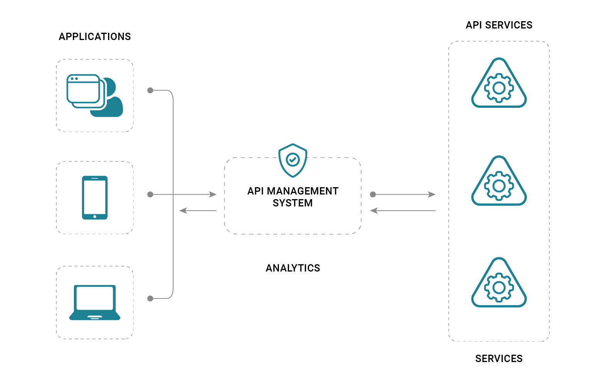

Roshan Suwal
Contact: roshan [at] tu.edu
GitHub: roshansuwal
CV
News [More Updates]
Theme by orderedlist
Api Management System: A scalable, multi-cloud API management platform for securing, publishing, and analyzing APIs.
Date: Aug 2021- Feb 2022
I teamed up with the big data team of Ekbana Solution to develop scalable and extendable system to manage, analyze and visualize APIS. We built two services: backend service to handle APIs requests and web service for APIs management and visualization.
Overview
AMS is a reliable, secure and scalable way to publish, consume and manage API’s.It ensures optimal performance of the API’s, tracks and enforces usage, authentication, and more.
System Design & Architecture

All requests from the client applications first reach the API gateway, which then forwards them to respective backend services. API gateway acts as a facade to the backend services, allowing API provicers to abstract API implementations and evolve backend architecture without impacting API consumers. The gateway enables consistent configuration of routing, security, throttling, caching and observability.
The API gateway :
- Accepts API calls and routes them to configured backends.
- Verifies API keys and IPs.
- Enforces usage quotas and rate limits.
- Adds the necessary header and query parameters to the requests.
- If configured, caches to improve response latency and minimize the load on backend services.
- If configured, returns the mock responses.
- Emits logs, metrics.
- Sends the notification and emails about the API status as configured.
Internal Architecture of AMS